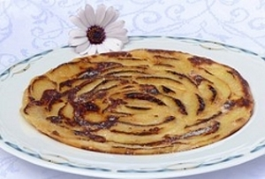
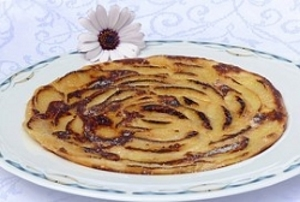

Boerenkool
Boerenkool, het is een makkelijk en snel gerecht om te maken. Je kunt er ook op vele manier mee varieëren. Hier is een makkelijke variant ervan om te maken.
Zuurkool
Met dit gerecht kun je vele soorten van maken. dit gerecht is makkelijk en snel te maken en is vooral lekker tijdens de winter.
Pannekoeken
dit gerecht is vooral heel handig als je voor veel mensen snel eten wilt maken en het mag ook niet te veel kosten.


 
